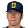

Real MLB history, mapped onto this league's franchises
Champion:  Los Angeles Dodgers (94-67)
Los Angeles Dodgers (94-67)
American League
East Division
| Team | W | L | PCT | GB | Finish | Postseason |
|---|---|---|---|---|---|---|
 Boston Red Sox Boston Red Sox | 89 | 73 | .549 | - | 1st | Playoffs |
 Detroit Tigers Detroit Tigers | 88 | 74 | .543 | 1 | 2nd | |
 Toronto Blue Jays Toronto Blue Jays | 87 | 75 | .537 | 2 | 3rd | |
 Milwaukee Brewers Milwaukee Brewers | 87 | 75 | .537 | 2 | 3rd | |
 New York Yankees New York Yankees | 85 | 76 | .528 | 3½ | 5th | |
 Cleveland Guardians Cleveland Guardians | 78 | 84 | .481 | 11 | 6th | |
 Baltimore Orioles Baltimore Orioles | 54 | 107 | .335 | 34½ | 7th |
West Division
| Team | W | L | PCT | GB | Finish | Postseason |
|---|---|---|---|---|---|---|
 Oakland Athletics Oakland Athletics | 104 | 58 | .642 | - | 1st | Playoffs |
 Minnesota Twins Minnesota Twins | 91 | 71 | .562 | 13 | 2nd | |
 Kansas City Royals Kansas City Royals | 84 | 77 | .522 | 19½ | 3rd | |
 California Angels California Angels | 75 | 87 | .463 | 29 | 4th | |
 Chicago White Sox Chicago White Sox | 71 | 90 | .441 | 32½ | 5th | |
 Texas Rangers Texas Rangers | 70 | 91 | .435 | 33½ | 6th | |
 Seattle Mariners Seattle Mariners | 68 | 93 | .422 | 35½ | 7th |
National League
East Division
| Team | W | L | PCT | GB | Finish | Postseason |
|---|---|---|---|---|---|---|
 New York Mets New York Mets | 100 | 60 | .625 | - | 1st | Playoffs |
 Pittsburgh Pirates Pittsburgh Pirates | 85 | 75 | .531 | 15 | 2nd | |
 Montreal Expos Montreal Expos | 81 | 81 | .500 | 20½ | 3rd | |
 Chicago Cubs Chicago Cubs | 77 | 85 | .475 | 24½ | 4th | |
 St. Louis Cardinals St. Louis Cardinals | 76 | 86 | .469 | 25 | 5th | |
 Philadelphia Phillies Philadelphia Phillies | 65 | 96 | .404 | 36 | 6th |
West Division
| Team | W | L | PCT | GB | Finish | Postseason |
|---|---|---|---|---|---|---|
| Los Angeles Dodgers | 94 | 67 | .584 | - | 1st | Champion |
 Cincinnati Reds Cincinnati Reds | 87 | 74 | .540 | 6½ | 2nd | |
 San Diego Padres San Diego Padres | 83 | 78 | .516 | 10½ | 3rd | |
 San Francisco Giants San Francisco Giants | 83 | 79 | .512 | 11 | 4th | |
 Houston Astros Houston Astros | 82 | 80 | .506 | 12 | 5th | |
 Atlanta Braves Atlanta Braves | 54 | 106 | .338 | 39 | 6th |
American League
Home runs
- 42
 Jose Canseco OAK
Jose Canseco OAK - 34
 Fred McGriff TOR
Fred McGriff TOR - 32Mena McGwire OAK
- 28McNamara High Minors MIN
- 28Eddie Murray BAL
Batting average
- .366Wade Boggs BOS
- .356Kirby Puckett MIN
- .325Mike Greenwell BOS
- .322Dave Winfield NYY
- .312Paul Molitor MIL
RBI
- 124Jose Canseco OAK
- 121Kirby Puckett MIN
- 119Mike Greenwell BOS
- 111Dwight Evans BOS
- 107Dave Winfield NYY
Hits
- 234Kirby Puckett MIN
- 214Wade Boggs BOS
- 192Mike Greenwell BOS
- 190Paul Molitor MIL
- 190Robin Yount MIL
Runs
- 128Wade Boggs BOS
- 120Jose Canseco OAK
- 118Rickey Henderson NYY
- 115Paul Molitor MIL
- 109Kirby Puckett MIN
Stolen bases
- 93Rickey Henderson NYY
- 44Howell Pettis DET
- 41Paul Molitor MIL
- 40Jose Canseco OAK
- 35Harold Reynolds SEA
On-base %
- .476Wade Boggs BOS
- .416Mike Greenwell BOS
- .412Alvin Davis SEA
- .398Dave Winfield NYY
- .394Rickey Henderson NYY
Slugging %
- .569Jose Canseco OAK
- .552Fred McGriff TOR
- .551McNamara High Minors MIN
- .545Kirby Puckett MIN
- .530Mike Greenwell BOS
OPS
- .965Wade Boggs BOS
- .960Jose Canseco OAK
- .946Mike Greenwell BOS
- .928Fred McGriff TOR
- .927Dave Winfield NYY
Doubles
- 45Wade Boggs BOS
- 42Moreno Brett KCM
- 42Johnny Ray LAA
- 42Kirby Puckett MIN
- 41Tony Fernandez TOR
Triples
- 11Harold Reynolds SEA
- 11Willie Wilson KCM
- 11Robin Yount MIL
- 8Mike Greenwell BOS
- 7Johnny Ray LAA
Walks
- 125Wade Boggs BOS
- 113Rick High Minors NYY
- 102Cal Ripken Jr. BAL
- 95Alvin Davis SEA
- 87Mike Greenwell BOS
Total bases
- 358Kirby Puckett MIN
- 347Jose Canseco OAK
- 313Mike Greenwell BOS
- 300Moreno Brett KCM
- 297Joe Carter CLE
WAR (hitters, OOTP)
- 8.0Wade Boggs BOS
- 7.1Kirby Puckett MIN
- 7.1Jose Canseco OAK
- 6.0Mike Greenwell BOS
- 5.8Rickey Henderson NYY
Wins
- 24Frank Viola MIN
- 21Dave Stewart OAK
- 20Mark Gubicza KCM
- 18Bruce Hurst BOS
- 18Greg Swindell CLE
ERA
- 2.45Balser Anderson MIN
- 2.45Teddy Higuera MIL
- 2.64Frank Viola MIN
- 2.70Mark Gubicza KCM
- 2.93
 Roger Clemens BOS
Roger Clemens BOS
Strikeouts
- 291Roger Clemens BOS
- 235Mark Langston SEA
- 193Frank Viola MIN
- 192Dave Stewart OAK
- 192Teddy Higuera MIL
Saves
- 45Dennis Eckersley OAK
- 42Jeff Reardon MIN
- 37Doug Jones CLE
- 34Bobby Thigpen SBS
- 30Dan Plesac MIL
Innings
- 275.2Dave Stewart OAK
- 269.2Mark Gubicza KCM
- 264.0Roger Clemens BOS
- 261.1Mark Langston SEA
- 260.2Bret Saberhagen KCM
WHIP
- 1.00Teddy Higuera MIL
- 1.06Roger Clemens BOS
- 1.12Jeff Robinson DET
- 1.13Mike Moore SEA
- 1.14Frank Viola MIN
K/9
- 9.9Roger Clemens BOS
- 8.1Mark Langston SEA
- 7.6Bobby Witt DAL
- 7.6Teddy Higuera MIL
- 7.2Mike Moore SEA
Complete games
- 14Dave Stewart OAK
- 14Roger Clemens BOS
- 13Bobby Witt DAL
- 12Greg Swindell CLE
- 12Mike Witt LAA
Shutouts
- 8Roger Clemens BOS
- 4Mark Gubicza KCM
- 4Greg Swindell CLE
- 4Dave Stieb TOR
- 3Paul Kilgus DAL
WAR (pitchers, OOTP)
- 10.1Roger Clemens BOS
- 7.1Mark Gubicza KCM
- 6.8Greg Swindell CLE
- 6.6Frank Viola MIN
- 6.5Teddy Higuera MIL
National League
Home runs
- 39Darryl Strawberry NYK
- 30Glenn Davis HOU
- 29
 Andres Galarraga MON
Andres Galarraga MON - 29Will Clark SFS
- 27Kevin McReynolds NYK
Batting average
- .313Tony Gwynn SDP
- .307
 Rafael Palmeiro CHC
Rafael Palmeiro CHC - .303Andre Dawson CHC
- .302Andres Galarraga MON
- .300Gerald Perry ATL
RBI
- 109Will Clark SFS
- 101Darryl Strawberry NYK
- 100Richards Bonilla PIT
- 100Andy Van Slyke PIT
- 99Glenn Davis HOU
Hits
- 184Andres Galarraga MON
- 179Andre Dawson CHC
- 178Rafael Palmeiro CHC
- 175Steve Sax LAD
- 174Barry Larkin CIN
Runs
- 109Brett Butler SFS
- 106Kirk Gibson LAD
- 102Will Clark SFS
- 101Andy Van Slyke PIT
- 101Darryl Strawberry NYK
Stolen bases
- 81Vince Coleman STL
- 65Gerald Young HOU
- 57Ozzie Smith STL
- 46McClanahan Nixon MON
- 46Hall Sabo CIN
On-base %
- .397Kal Daniels CIN
- .393Brett Butler SFS
- .386Will Clark SFS
- .377Kirk Gibson LAD
- .373Tony Gwynn SDP
Slugging %
- .545Darryl Strawberry NYK
- .540Andres Galarraga MON
- .508Will Clark SFS
- .506Andy Van Slyke PIT
- .504Andre Dawson CHC
OPS
- .911Darryl Strawberry NYK
- .894Will Clark SFS
- .893Andres Galarraga MON
- .860Kirk Gibson LAD
- .860Kal Daniels CIN
Doubles
- 42Andres Galarraga MON
- 41Rafael Palmeiro CHC
- 40Hall Sabo CIN
- 37Sid Bream PIT
- 35Dale Murphy ATL
Triples
- 15Andy Van Slyke PIT
- 10Vince Coleman STL
- 9Soto Samuel PHI
- 9Gerald Young HOU
- 9Brett Butler SFS
Walks
- 100Will Clark SFS
- 97Brett Butler SFS
- 87Kal Daniels CIN
- 86Howard Johnson NYK
- 85Richards Bonilla PIT
Total bases
- 329Andres Galarraga MON
- 298Andre Dawson CHC
- 297Andy Van Slyke PIT
- 296Darryl Strawberry NYK
- 292Will Clark SFS
WAR (hitters, OOTP)
- 6.6Andy Van Slyke PIT
- 6.0Barry Larkin CIN
- 5.8Brett Butler SFS
- 5.8Eric Davis CIN
- 5.5Kirk Gibson LAD
Wins
- 23Orel Hershiser LAD
- 23Danny Jackson CIN
- 20

David Cone NYK - 19Rick Reuschel SFS
- 18Dwight Gooden NYK
ERA
- 2.18Joe Magrane STL
- 2.22David Cone NYK
- 2.26Orel Hershiser LAD
- 2.32John Tudor STL
- 2.39Jose Rijo CIN
Strikeouts
- 228Nolan Ryan HOU
- 213David Cone NYK
- 208Jose De Leon STL
- 190Mike Scott HOU
- 189Sid Fernandez NYK
Saves
- 39
 John Franco CIN
John Franco CIN - 34Jim Gott PIT
- 32Todd Worrell STL
- 28Mark Davis SDP
- 28Steve Bedrosian PHI
Innings
- 267.0Orel Hershiser LAD
- 260.2Danny Jackson CIN
- 250.2Tom Browning CIN
- 249.0Rick Mahler ATL
- 249.0
 Greg Maddux CHC
Greg Maddux CHC
WHIP
- 0.94Pascual Perez MON
- 0.98Mike Scott HOU
- 1.00Bob Ojeda NYK
- 1.05Orel Hershiser LAD
- 1.05Sid Fernandez NYK
K/9
- 9.3Nolan Ryan HOU
- 9.1Sid Fernandez NYK
- 8.9Jose Rijo CIN
- 8.3Jose De Leon STL
- 8.3David Cone NYK
Complete games
- 15Orel Hershiser LAD
- 15Danny Jackson CIN
- 13Eric Show SDP
- 12Rick Sutcliffe CHC
- 10Dwight Gooden NYK
Shutouts
- 8Orel Hershiser LAD
- 6Danny Jackson CIN
- 6Tim Leary LAD
- 5Bob Ojeda NYK
- 5Mike Scott HOU
WAR (pitchers, OOTP)
- 7.0Dwight Gooden NYK
- 6.3David Cone NYK
- 5.8Bob Ojeda NYK
- 5.6Tim Leary LAD
- 5.4Danny Jackson CIN
From players_league_leader.csv (top five shown, ties included as stored). The file's category codes are unlabeled; the site shows only the categories it could match to season stat lines. The team logo is the player's franchise that season (most games).
Most Valuable Player
| League | Pos | Player | Team |
|---|---|---|---|
| American | Jose Canseco | Oakland Athletics | |
| National | Kirk Gibson | Los Angeles Dodgers |
Cy Young Award
| League | Pos | Player | Team |
|---|---|---|---|
| American | Frank Viola | Minnesota Loons | |
| National | Orel Hershiser | Los Angeles Dodgers |
Rookie of the Year
| League | Pos | Player | Team |
|---|---|---|---|
| American | Walt Weiss | Oakland Athletics | |
| National | Hall Sabo | Cincinnati Reds |
Reliever of the Year
| League | Pos | Player | Team |
|---|---|---|---|
| American | Dennis Eckersley | Oakland Athletics | |
| National | John Franco | Cincinnati Reds |
World Series MVP
| League | Pos | Player | Team |
|---|---|---|---|
| American | Orel Hershiser | Los Angeles Dodgers |
Gold Gloves
| League | Pos | Player | Team |
|---|---|---|---|
| American | P | Mark Langston | Seattle Mariners |
| American | C | Rivell Boone | Anaheim Angels |
| American | 1B | Don Mattingly | New York Yankees |
| American | 2B | Harold Reynolds | Seattle Mariners |
| American | 3B | McNamara High Minors | Minnesota Loons |
| American | SS | Tony Fernandez | Toronto Blue Jays |
| American | CF | Howell Pettis | Detroit Wolverines |
| American | CF | Orr White | Anaheim Angels |
| American | CF | Kirby Puckett | Minnesota Loons |
| National | P | Orel Hershiser | Los Angeles Dodgers |
| National | C | Benito Santiago | San Diego Padres |
| National | 1B | Keith Hernandez | New York Knights |
| National | 2B | Ryne Sandberg | Chicago Cubs |
| National | 3B | Tim Wallach | Montreal Royeaux |
| National | SS | Ozzie Smith | St. Louis Cardinals |
| National | CF | Andy Van Slyke | Pittsburgh Pirates |
| National | CF | Eric Davis | Cincinnati Reds |
| National | CF | Andre Dawson | Chicago Cubs |
Silver Sluggers
| League | Pos | Player | Team |
|---|---|---|---|
| American | C | Munoz Low Minors | Southside Black Sox |
| American | 1B | Moreno Brett | Kansas City Monarchs |
| American | 2B | Julio Franco | Cleveland Spiders |
| American | 3B | Wade Boggs | Boston Red Sox |
| American | SS | Alan Trammell | Detroit Wolverines |
| American | CF | Jose Canseco | Oakland Athletics |
| American | CF | Mike Greenwell | Boston Red Sox |
| American | CF | Kirby Puckett | Minnesota Loons |
| American | DH | Paul Molitor | Milwaukee Brewers |
| National | P | Tim Leary | Los Angeles Dodgers |
| National | C | Benito Santiago | San Diego Padres |
| National | 1B | Andres Galarraga | Montreal Royeaux |
| National | 2B | Ryne Sandberg | Chicago Cubs |
| National | 3B | Richards Bonilla | Pittsburgh Pirates |
| National | SS | Barry Larkin | Cincinnati Reds |
| National | CF | Andy Van Slyke | Pittsburgh Pirates |
| National | CF | Darryl Strawberry | New York Knights |
| National | CF | Kirk Gibson | Los Angeles Dodgers |
Award codes in players_awards.csv are unlabeled; names were matched from the winners (e.g. 2001: Bonds and Ichiro for code 5, Randy Johnson and Clemens for code 4, Ichiro and Pujols for code 6, Rivera and Benitez for code 13, Johnson and Schilling for code 15). Code 7 is the Gold Glove and code 11 the Silver Slugger (one per position); code 9 is the All-Star selections.
American League 30 selections
National League 29 selections
From players_awards.csv code 9 (matches league_history_all_star.csv counts). Position is the player's listed primary position, not necessarily where he played in the game; team is his franchise that season (most games).
Seasons before 2002 are real MLB history from the OOTP export, mapped by OOTP onto this league's 30 original franchises (club names are as they were in that season). 2002 is this universe. Player names are as the export stores them (apart from a few Alexander has renamed in his game since this dump, such as Babe Ruth): OOTP gives some historical players generated names (the 586-homer career is filed under “Legendre Robinson”), and the site keeps them. Every player links to a page: 2002 players to their season pages, everyone else to a historical career page.